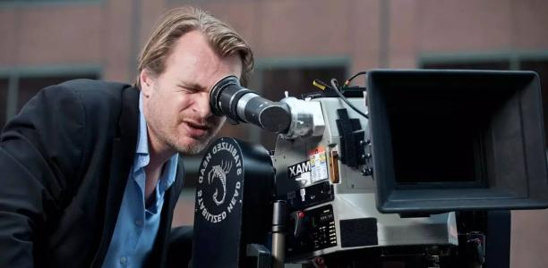
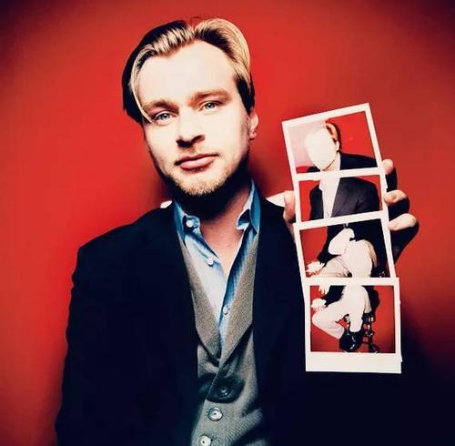
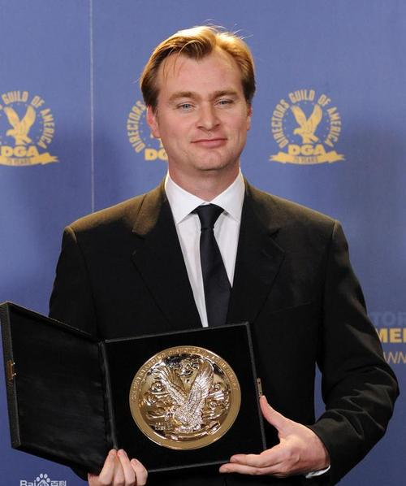

克里斯托弗·诺兰
克里斯托弗·爱德华·诺兰，CBE（英语：Christopher Edward
Nolan，/ˈnoʊlən/，1970年7月30日－）1970年7月30日出生于伦敦，英国导演、编剧、摄影师及制片人
。
重要事件
-
1996年，克里斯托弗·诺兰拍摄首部故事片《追随》，在旧金山电影节上放映并受到关注。
-
2000年，克里斯托弗·诺兰凭《记忆碎片》获得第74届奥斯卡和第59届金球奖最佳原创剧本提名
。
- 2005年，执导电影《蝙蝠侠：侠影之谜》。
-
2006年，执导作品《致命魔术》以其诡异的气氛和精细的结构获土星奖最佳科幻电影。
-
2008年，凭借电影《蝙蝠侠：黑暗骑士》获第35届土星奖最佳编剧奖，该片上映一周就打破北美多项票房纪录成为全球第四部票房达到10亿美元的电影。
- 2010年，凭《盗梦空间》获得金球奖最佳导演及最佳原创剧本提名 。
-
2012年，再度执导系列电影《蝙蝠侠：黑暗骑士崛起》，该片获土星奖最佳导演提名。
-
2015年3月，凭借执导电影《星际穿越》入围第41届美国科幻恐怖电影奖土星奖最佳导演
。
-
2017年，凭借《敦刻尔克》荣获亚特兰大影评人协会奖最佳导演
、第90届奥斯卡金像奖最佳导演提名 。
-
2019年12月，克里斯托弗·诺兰在白金汉宫参加了授勋仪式。剑桥公爵威廉王子授予大英帝国司令勋章（CBE），以表彰其作为导演、编剧、制片人对电影做出的贡献
。
成就和荣誉
奥斯卡金像奖
- 2018 第90届 最佳导演 敦刻尔克 （提名）
- 2018 第90届 最佳影片 敦刻尔克 （提名）
- 2011 第83届 最佳原创剧本 盗梦空间 （提名）
- 2011 第83届 最佳影片 盗梦空间 （提名）
- 2002 第74届 最佳原创剧本 记忆碎片 （提名）
美国电影电视金球奖
- 2018 第75届 最佳导演 敦刻尔克 （提名）
- 2011 第68届 最佳编剧 盗梦空间 （提名）
- 2011 第68届 最佳导演 盗梦空间 （提名）
- 2002 第59届 最佳编剧 记忆碎片 （提名）
英国电影学院奖
- 2018 第71届 最佳影片 敦刻尔克 （提名）
- 2018 第71届 最佳导演 敦刻尔克 （提名）
- 2011 第64届 最佳原创剧本 盗梦空间 （提名）
- 2011 第64届 最佳影片 盗梦空间 （提名）
- 2011 第64届 最佳导演 盗梦空间 （提名）
土星奖
- 2015 第41届 最佳导演 星际穿越 （提名）
- 2013 第39届 最佳导演 黑暗骑士崛起 （提名）
- 2011 第37届 最佳编剧 盗梦空间 （获奖）
- 2011 第37届 最佳导演 盗梦空间 （获奖）
- 2009 第35届 最佳导演 黑暗骑士 （提名）
- 2009 第35届 最佳编剧 黑暗骑士 （获奖）
- 2006 第32届 最佳导演 蝙蝠侠:开战时刻 （提名）
- 2006 第32届 最佳编剧 蝙蝠侠:开战时刻 （获奖）
亚特兰大影评人协会奖
卡普里好莱坞国际电影节
-
2017 第22届卡普里好莱坞国际电影节最佳导演奖 敦刻尔克 （获奖）
主要作品
| 年份 |
译名 |
原名 |
| 1998 |
《追随》 |
Following |
| 2000 |
《记忆碎片》 |
Memento |
| 2002 |
《失眠症》 |
Insomnia |
| 2005 |
《蝙蝠侠：侠影之谜》 |
Batman Begins |
| 2008 |
《蝙蝠侠：黑暗骑士》 |
Dark Knight |
| 2010 |
《盗梦空间》 |
Inception |
| 2012 |
《蝙蝠侠：黑暗骑士崛起》 |
The Dark Knight Rises |
| 2014 |
《星际穿越》 |
Interstellar |
| 2017 |
《敦刻尔克》 |
Dunkirk |
| 2020 |
《信条》 |
Tenet |
图集



生平
1970年7月30日，克里斯托弗·诺兰出生于英国伦敦，克里斯托弗·诺兰小时候经常在美国和英国两边跑（因为妈妈是空姐），所以口音偏英式，但有时说话会突然转成美式音。他对于两国的文化和生活习惯都很熟悉。
1977年，七岁的诺兰就用父亲的超8摄影机拍摄自己的玩具兵人，开始了最早的电影创作。1989年，他的超现实主义短片《塔兰台拉》（Tarantella）在美国公共广播公司创办的独立电影。
1992年，诺兰大学毕业于黑利伯瑞学院，这是一所位于伦敦赫特福德郡的独立学院。后进入伦敦大学学院（UCL）学习英国文学，在校期间，他与一些志同道合的朋友组织了“16毫米”社团，拍摄了大量短片。1996拍摄另一部短片《盗窃罪》（Larceny）在的剑桥电影节上放映。
1997年，他拍摄的一部3分钟片长的短片《蚁蛉》（Doodlebug），2003年被包含在DVD《Cinema16:BritishShortFilms》
克里斯托弗·诺兰的父亲是英国人，做广告文案工作。母亲是美国人，从事乘务员工作。
克里斯托弗·诺兰上有兄长马修，下有弟弟乔纳森·诺兰是一名编辑。由于父母的关系，兄弟三人从小就在英、美两国之间奔波。
《追随》的成功赢得了艾玛·托马斯的芳心，两人是大学同学，克里斯托弗·诺兰与艾玛·托马斯在伦敦读大学时相恋，毕业之后于1997年结婚，拥有三个孩子和一家制作公司，一家人现居加利福尼亚州洛杉矶。